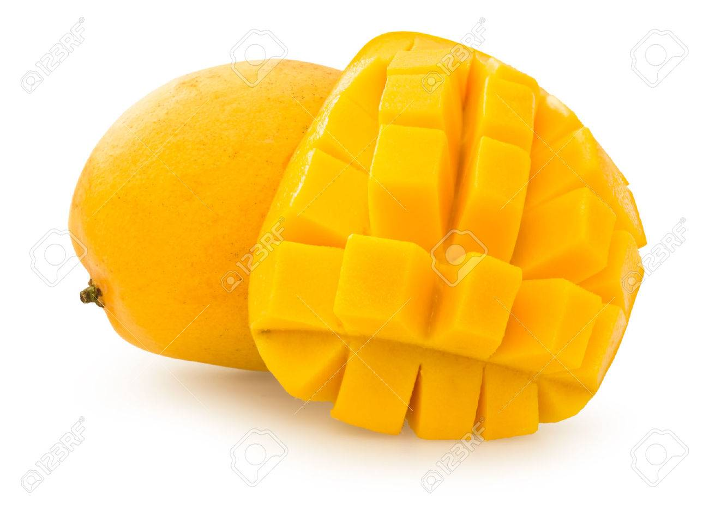

귤

달달 새콤한 귤
별명이 귤 킬러일 정도로 귤을 엄청 좋아한다. 손이 노래질때까지 먹는다.
사과 깎는것처럼 껍질을 끊기지 않게 까먹는걸 좋아한다.
망고

달달 달달한 망고
망고는 쥬스로 먹는것도 좋아하고 생으로 먹는것도 매우 좋아한다.
중국에서 유학할때 시장에서 싸게 팔아서 자주 사먹었는데 정말 정말
정~~~~말 맛있다. 여행가게 되면 사먹는걸 강력 추천한다!
배

달달 수분가득 배
배는 먹으면 뭔가 수분이 채워지는 느낌이다. 마려서 먹는것도
무지 좋아한다.입이 심심할 때 먹으면 적당히 배도 채워주면서
식감도 좋아서 먹기 좋다.